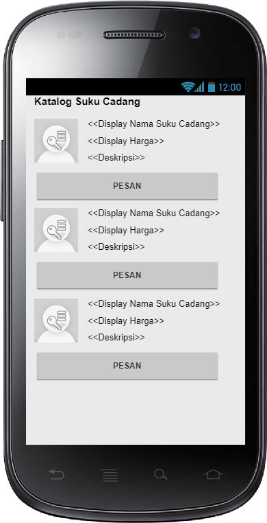

NIM : 1811500025 <br>
Nama : Jimmy Ngui <br>
Kelompok : TI6A <br>
<br>
<br>
Hasil Saya Menyadur : <br>
1. Penggunanaan Software Pencil <br>
2. Menambahkan keterangan/deskripsi gambar di Ms. Word <br>

<br>
<br>
Miscellaneous : <br>
<br>
1. <a href = "RancanganLayar.epgz">Rancangan Layar Pencil</a><br>
2. <a href = "Format Pengerjaan Rancangan Layar.docx">File Word</a><br><br>
<br><br>
<br><br>
<br><br>
<br><br>
